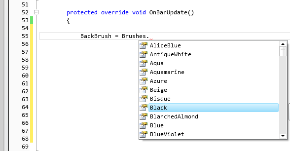
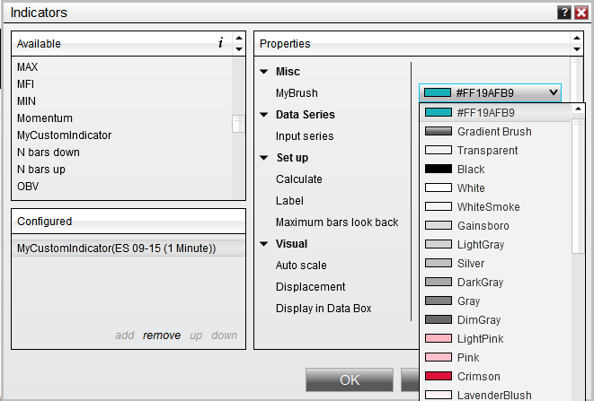

|
<< Click to Display Table of Contents >> Working with Brushes |


|
Working with Brushes
|
<< Click to Display Table of Contents >> Working with Brushes |
|
In order to achieve custom rendering for various chart related objects, a Brush is used to "paint" an area or another chart object. There are a number of different brushes which are available through the .NET Framework, where the most common type of brush is a SolidColorBrush which is used to paint an area with a single solid color.
Notes: The following document is written in sequential fashion, starting with the most simple concepts, to the more advance topics. The majority of the brushes discussed in this document will be referred to as "WPF" brushes which exist in the System.Windows.Media namespace, however there are also "SharpDX" brushes which exist in the 3rd party SharpDX.Direct2D1 namespace used for advanced chart rendering. Advanced brush types should ONLY be used by experienced programmers familiar with .NET graphics functionality. |
 Understanding predefined brushes
Understanding predefined brushes
Using Predefined BrushesFor convenience, the .NET Framework supplies a collection of static predefined Brushes, such as Red or Green. The advantage to using these brushes is that they are readily available, properly named to quickly find a simple color value, and can be reused on-the-fly without having to recreate an instance of the brush at run time, and do not need to be otherwise managed. There are 256 predefined named brushes which are available in the Brushes class. You can browse this list in the NinjaScript editor just by typing Brushes. and using Intelliprompt to find the desired named brush of your choice.

|
||||||
Creating a Custom Solid Color BrushIn cases where you would like more specific color than one of the predefined brushes, you can optionally create your own Brush object to be used for custom rendering. In order to achieve this, you will need to initiate your own custom brush object, where you can then specify your color using RGB (red, green, blue) values Color.FromRgb().
Creating a Transparent Solid Color BrushYou can create a transparent brush using the Color.FromArgb() where the A parameter defines alpha transparency.
|
||||||||||||
 Using brushes defined on the user interface
Using brushes defined on the user interface
Saving a Brush as a user defined property (Serialization)If you would like a brush to become a public UI property, meaning the brush can be set up and defined by a user during configuration, it is important to be able to save the user's brush selection in order to restore that brush either from a workspace or from a template file at a later time. Saving a custom defined user input is done through a concept of Serialization which writes the object and its value to a .xml file. This process normally works fine for a simple user defined value type (such as a double or an int) but for more complex types such as Brushes, the object itself cannot be serialized directly to the .xml file and will result in errors upon saving the indicator or strategy to a workspace or template file. The example below will demonstrate and explain how to properly store a user define brush input which will be correctly serialized.
In order to achieve the desired behavior of saving the user defined brush input, we will add the XmlIgnore property attribute to the public brush resource, which essentially tells the serialization routine to ignore this property.
In its place, we create a new public string called "MyBrushSerialize" which will convert the public "MyBrush" to a string type which can then be processed by the serialization routines. We also add the Browsable(false) attribute to this public string to prevent this property from showing up on the UI, which is of no value to the end user.
Adding a User Defined Brush to the Color PickerYou can optionally define a custom brush to be added to the standard color picker by using a [CustomBrush] attribute to a public brush. The CustomBrush attribute will then add it to the color picker menu for that indicator when you look through the plots, lines, or other brushes from the indicators configured menu and will be listed toward the top of the list (as pictured below)
 |
 Using advanced brush types (SharpDX)
Using advanced brush types (SharpDX)
Understanding SharpDX BrushesWhile the majority of the NinjaTrader platform's UI is WPF, under the hood, chart's use a DirectX API for faster performance. To render custom objects to a chart during OnRender(), a particular SharpDX Brush object must be implemented which reside in the SharpDX.Direct2D1 namespace. These brushes can then be passed as arguments to the SharpDX RenderTarget methods such FillRectangle(), DrawLine(), etc. While SharpDX Brushes behave much the same as previously discussed WPF Brushes, there are a few special considerations you must take as detailed in the following sections.
Creating a SharpDX BrushA SharpDX Brush must be created either in OnRender() or RenderTargetChanged(). If you have custom brushes which may be changed on various conditions such as in OnBarUpdate() or by a user during OnStateChange(), or you are pre-computing a custom brush for performance optimization, you will need to ensure the actual SharpDX instance is updated in OnRender() or RenderTargetChange().
Converting to SharpDX BrushFor convenience, you can convert a computed WPF Brush to a SharpDX Brush using the ToDxBrush() extension method.
Disposing DXBrushSince SharpDX Brushes reference unmanaged resources, these brushes should always be disposed of after they have been used.
Using Complex BrushesIn addition to the SolidColorBrush object demonstrated on this page, the .NET Framework provides more complex brushes which have more attributes than just filling an area with a solid color. Information on these special types of brushes can be found on the MSDN website: LinearGradientBrush, RadialGradientBrush, ImageBrush.
These complex types also have an equivalent found in the SharpDX SDK Reference: SharpDX.Direct2D1.LinearGradientBrush, SharpDX.Direct2D1.RadialGradientBrush |